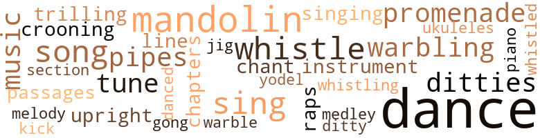
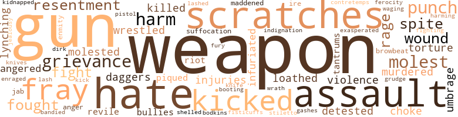
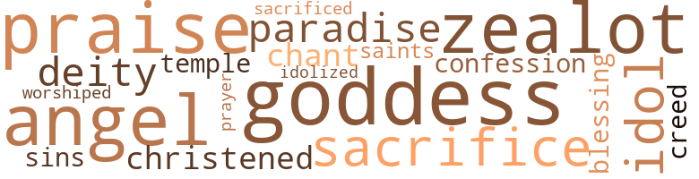

Prince of Washington Square, by Liscomb, Harry F. (1925)
61 music-related terms matched in this text.
Most frequent terms in this topic: dance (6); dances (6); mandolin (4); whistle (3); song (2)
chapter.n.01
Definition: a subdivision of a written work; usually numbered and titled
| word | sentence |
|---|---|
| chapters | When the purple portieres had safely shrouded their retreating shadows from the critical observation of the bachelors , Jack , who had been vainly essaying to peruse the opening chapters of the current dime novel thriller by Nicholas Carter , momently re-posited it on his chair and executed a complicated handspring on the soft sinking rug , which was well applauded by the audience for his unscheduled performance . |
croon.v.01
Definition: sing softly
| word | sentence |
|---|---|
| crooning | Here and there sat a devoted young mother crooning and rocking her beloved progeny to sleep in her arms . |
dance.n.01
Definition: an artistic form of nonverbal communication
| word | sentence |
|---|---|
| dances | Meantime Dan was committing some impromtu dances of his original creation and was roundly applauded by his cronies for his artistic ambitions . |
| dance | Day after day Rastus had painstakingly taught the newest dance sensation to Jack , until he was able to master it to a " T. " Doubtlessly Rastus would have beamed with exultation had he been there to give his talented pupil the once-over as he went on with the dance midst the applause of the five witnesses . |
| dance | Day after day Rastus had painstakingly taught the newest dance sensation to Jack , until he was able to master it to a " T. " Doubtlessly Rastus would have beamed with exultation had he been there to give his talented pupil the once-over as he went on with the dance midst the applause of the five witnesses . |
| dances | He celebrated the prolonged absence of his father by giving immodest dances and so-called " petting parties " in his dad 's domicile . |
| dances | " Percy sweetheart , I have reference to those obnoxious young Chinks who are always on deck for your petting parties and unconventional dances . |
| dance | Jack shimmied his first dance with Vera , and she afterwards proclaimed him to be a " wow " of a stepper and then some . |
| dances | Vera 's careless comment caused a heartful of regrets and supplied Jack with an abundance of reserved dances with the fairest girls in the house . |
| dances | She desired priggishly to have the majority of the dances and shimmies with Jack . |
| dances | After the enjoyable and stimulating dances were over , the respectful cake-eaters and flappers , captained by Vera , romped boisterously into the reception-room in single file , where they were quickly served with cake and ice cream . |
dance.v.03
Definition: skip, leap, or move up and down or sideways
| word | sentence |
|---|---|
| dance | At a special mandate from the two coppers , Jack began to dance " The Charleston Cutaway , " the most current and popular negro-foot classic conceived by the sheiks and shebas encamping in the ethiopian zone of Harlem . |
| dance | When I obstinately refused to dance the Chicago Shimmy with him he straightway flew into tantrums and demanded to know what had accelerated my refusal . |
| dance | I remonstrated by telling him that it was shameful enough for me to have to dance the Chicago Shimmy with young men of my own race lest more than to have it out with yellow dogs like him . |
| danced | When Mr. Vanderlope gave the money to Rastus the latter immediately danced a jig that would have put many professional jiggers to shame . |
ditty.n.01
Definition: a short simple song (or the words of a poem intended to be sung)
| word | sentence |
|---|---|
| ditties | Jealous of the plaudits and handclaps that had greeted the singsong achievements of his crippled predecessor , Toby tried to surpass his splendid record by trilling one of his own ditties titled " Why Fat Boys are Popular with the Girls . " |
| ditty | As Rastus strolled disdainfully by them they commenced to warble in alto voices that unpopular ditty : " Oh ! |
| ditties | After being introduced from the stage to the hushed and expectant audience , Rastus bowed courteously at them and tried to sing , with the accompaniment of the piano , one of the most popular ditties of the day . |
gong.n.01
Definition: a percussion instrument consisting of a metal plate that is struck with a softheaded drumstick
| word | sentence |
|---|---|
| gong | went the gong . |
jig.n.01
Definition: music in three-four time for dancing a jig
| word | sentence |
|---|---|
| jig | When Mr. Vanderlope gave the money to Rastus the latter immediately danced a jig that would have put many professional jiggers to shame . |
kick.v.04
Definition: kick a leg up
| word | sentence |
|---|---|
| kick | Jack itched to kick himself in the shins for permitting Tony to make a veritable clodhopper out of him . |
mandolin.n.01
Definition: a stringed instrument related to the lute, usually played with a plectrum
| word | sentence |
|---|---|
| mandolin | Terry then hobbled into sight , followed pantingly by Toby White , who was toting and perspiring under his arm a second-hand mandolin , of which he had developed a yearning passion for . |
| mandolin | All het up over what the coppers had implied to him , Toby snatched his mandolin away from Terry and wabbled sluggishly away from the place . |
| mandolin | The light-hearted cops stepped a few paces forward as though they were bent on chasing him , and Toby ran so swiftly that his clumsy feet got tangled up with each other and he fell flat on his mandolin with disastrous results . |
| mandolin | Toby reposed himself beside Terry and Dan , vainly striving to mend the dismembered pieces of his mandolin together . |
medley.n.01
Definition: a musical composition consisting of a series of songs or other musical pieces from various sources
| word | sentence |
|---|---|
| medley | Simultaneously with the discharge of Jack 's gun there came to his alertful ears the medley sound of scurrying feet and acrid commands being issued in the hallway of the basement . |
music.n.01
Definition: an artistic form of auditory communication incorporating instrumental or vocal tones in a structured and continuous manner
| word | sentence |
|---|---|
| music | As they strolled thru the different streets and byways they observed with childlike curiosity and reverence the bizarre tea-shops principally patronized by aristocratic people ; also the jazz bands quartered in neighboring cabarets that furnished the music for their high-class entertainers ; and , last but not insignificant by any means , the incipient youthful artists and sculptors who had modestly isolated themselves in the sanctum of their skylight ateliers away from the caustic criticisms and witticisms of their more experienced contemporaries . |
| music | The tenth time that he dusted off the canvas with his face Rastus dreamed an angel was standing over him and playing on a large harp the sweetest music he had ever listened to . |
musical_instrument.n.01
Definition: any of various devices or contrivances that can be used to produce musical tones or sounds
| word | sentence |
|---|---|
| instrument | Propping himself up against a concrete pillar of the magnificent arch , Toby began to thrum his stringed instrument and croon to himself the latest jazz hits . |
passage.n.06
Definition: a short section of a musical composition
| word | sentence |
|---|---|
| passages | Then she passed the tome over to Percy , so that he could memorize the passages contained therein . |
piano.n.01
Definition: a keyboard instrument that is played by depressing keys that cause hammers to strike tuned strings and produce sounds
| word | sentence |
|---|---|
| piano | After being introduced from the stage to the hushed and expectant audience , Rastus bowed courteously at them and tried to sing , with the accompaniment of the piano , one of the most popular ditties of the day . |
pipe.n.04
Definition: a tubular wind instrument
| word | sentence |
|---|---|
| pipes | In one corner of the cozy after-dinner retreat Professor Sharp and his bachelor friends sat serenely smoking their pipes or stogies , while in another the society of tattling tongues were noisily engaged in discussing the scandalous topics of the day with their congenial selves . |
| pipes | The cake-eaters , having consumed their delectable dainties in the form of cakes that they had brought along to satisfy their hunger , were now smoking their pipes or puffing away at their cigars . |
promenade.n.01
Definition: a formal ball held for a school class toward the end of the academic year
| word | sentence |
|---|---|
| promenade | Not relishing the thought of perceiving others consume something he would like to partake of himself , Jack proposed a peaceful promenade through the park to Beatrice , and she gladly consented to go with him . |
| promenade | Saturdays and Sundays found the social elite of Harlem 's smart set arrayed in all their finery for a quiet promenade along Seventh Avenue . |
rap.n.05
Definition: genre of African-American music of the 1980s and 1990s in which rhyming lyrics are chanted to a musical accompaniment; several forms of rap have emerged
| word | sentence |
|---|---|
| raps | ONE sunny day , around lunch hour , while her dutiful son Terry was bootblacking in Washington Square , Mrs. Lucy Lewis , still confined to her cot with an incurable illness and disability of her limbs , was visibly disturbed by the rapid succession of raps on the door . |
section.n.01
Definition: a self-contained part of a larger composition (written or musical)
| word | sentence |
|---|---|
| section | Before her stupefied servants were aware of what was transpiring in the hinder-most section of the car , the experienced abductors had spirited Vera away in their purring cab . |
sing.v.02
Definition: produce tones with the voice
| word | sentence |
|---|---|
| Sing | They pushed open his door and began to chant playfully : " Wing Sing Chinaman , Chew dead rats for ginger snaps . " |
| Sing | Some weeks later the guileful Mike and his caitiff followers were transferred to Sing Sing University , where they had been registered for an indefinite span of years , so that they may pursue their post-graduates ' course in crookology , while the irreparable Tony was remanded to the State 's Reformatory for incorrigibles . |
| sing | After being introduced from the stage to the hushed and expectant audience , Rastus bowed courteously at them and tried to sing , with the accompaniment of the piano , one of the most popular ditties of the day . |
singing.n.01
Definition: the act of singing vocal music
| word | sentence |
|---|---|
| singing | Because of his superfluous poundage Toby 's oral organs could n't or would n't tolerate the exacting strain they were being compelled to undergo , so that their selfish young master might carry off the singing honors of the night , consequently they planned to teach him an unforgetful lesson . |
song.n.01
Definition: a short musical composition with words
| word | sentence |
|---|---|
| song | Terry voluntarily regaled his devoted confreres by warbling in his beautiful and self-cultured voice the most recent song sensations . |
| song | Ere Toby could conclude his song two beardless and jolly-mannered policemen came running to the spot to determine who was being murdered so brutally . |
| songs | He hummed and whistled the latest songs daily . |
tone.v.01
Definition: utter monotonously and repetitively and rhythmically
| word | sentence |
|---|---|
| chant | They pushed open his door and began to chant playfully : " Wing Sing Chinaman , Chew dead rats for ginger snaps . " |
tune.n.01
Definition: a succession of notes forming a distinctive sequence
| word | sentence |
|---|---|
| line | In the twinkling of one 's eyelash the hostile hordes of youngsters had dispersed to their ever-welcome abodes ; consequently when the policemen arrived at the battle-ground they found nothing except a long line of traffic vehicles and piqued chauffeurs , who were eager to be sent about their business . |
| tune | Besides , if these word painters of pen-and-ink fame were to hobnob with us occasionally for the express purpose of attending our petting parties , cocktail carousals , and other orgies that transpires in my dwelling , I 'd wager a good-sized bankroll that these authors would be warbling another tune . |
| melody | Tony Rago , the abominable bootblack bully , then swaggered up to Terry , who was preoccupied jingling the honest and hard-earned coins in his pants and whistling a carefree melody through his oval lips to dawdle away the idle moments until a prospective patron hovered into sight . |
| tune | All at once the jazz orchestra struck up a lively tune and the refined cake-eaters and flappers began to select their partners for the shimmy-whirl . |
uke.n.01
Definition: a small guitar having four strings
| word | sentence |
|---|---|
| ukuleles | On the southeast corner of One Hundred and Fortieth Street there stood a stentorian and restless group of sheiks and shebas , twanging their ukuleles and practicing the latest jazz steps , despite the fact it was the day of the Sabbath . |
upright.n.02
Definition: a piano with a vertical sounding board
| word | sentence |
|---|---|
| upright | Rastus stirred uneasily beneath his bedclothes and suddenly sat upright in his cot . |
warble.v.01
Definition: sing or play with trills, alternating with the half note above or below
| word | sentence |
|---|---|
| trilling | Jealous of the plaudits and handclaps that had greeted the singsong achievements of his crippled predecessor , Toby tried to surpass his splendid record by trilling one of his own ditties titled " Why Fat Boys are Popular with the Girls . " |
whistle.v.01
Definition: make whistling sounds
| word | sentence |
|---|---|
| whistle | Impulsively taking out a big whistle that someone very dear to him had donated to him as a birthday present , Jack placed it to his mouth and lustily blew several shrill blasts on it to summon his comrades . |
| whistle | Jack dutifully drew out his whistle and blew three times upon it . |
| whistle | The impatient and wrathful fruit-vendor took out his police whistle and threatened to summon aid from the bluecoats . |
| whistling | Tony Rago , the abominable bootblack bully , then swaggered up to Terry , who was preoccupied jingling the honest and hard-earned coins in his pants and whistling a carefree melody through his oval lips to dawdle away the idle moments until a prospective patron hovered into sight . |
| whistled | He hummed and whistled the latest songs daily . |
yodel.v.01
Definition: sing by changing register; sing by yodeling
| word | sentence |
|---|---|
| warbling | Terry voluntarily regaled his devoted confreres by warbling in his beautiful and self-cultured voice the most recent song sensations . |
| warbling | Besides , if these word painters of pen-and-ink fame were to hobnob with us occasionally for the express purpose of attending our petting parties , cocktail carousals , and other orgies that transpires in my dwelling , I 'd wager a good-sized bankroll that these authors would be warbling another tune . |
| yodel | Jack nudged Rastus in his ribs while he was essaying to yodel the " West Indies Blues " and carry a tray of food at the same duration into the dining-parlor , and blandly whispered something into his ear . |
| warble | As Rastus strolled disdainfully by them they commenced to warble in alto voices that unpopular ditty : " Oh ! |
96 violence-related terms matched in this text.
Most frequent terms in this topic: weapon (6); guns (3); spite (2); kicked (2); punch (2)
abhor.v.01
Definition: find repugnant
| word | sentence |
|---|---|
| loathed | At first Jack loathed to think of accepting the money , but ever anxious to please his spunky little pal , he accepted it and yielded to his last demand of kissing him good-bye . |
abrasion.n.01
Definition: an abraded area where the skin is torn or worn off
| word | sentence |
|---|---|
| scratches | Strange though it may seem , Jack had escaped from the fiery chamber practically unmarked save for a few smarting burns and scratches on his face and arms which had been exposed to the merciless flames . |
| scratches | Finally Tony obtained the money , although his ugly face was gory in a dozen or more spots from scratches inflicted on him by his struggling and snivelling young victim . |
affray.n.02
Definition: a noisy fight
| word | sentence |
|---|---|
| fray | With a rousing cheer and a sweeping motion of his arm , Jack captained his forces into the thickest of the fray , and the battle of Washington Square was on in real earnest . |
| fray | Rastus eagerly accepted his terms and hurried to the dressing-room to undress for the fray . |
anger.n.01
Definition: a strong emotion; a feeling that is oriented toward some real or supposed grievance
| word | sentence |
|---|---|
| ire | All of her subtle charms having failed to appease his jealous ire , Pauline relied on her last cue - that of applying the acid test to him . |
| anger | Beatrice screamed and sprang up on her tiptoes , while her cheeks were aflame with anger . |
anger.v.02
Definition: become angry
| word | sentence |
|---|---|
| Angered | Angered at Toby because of his lack of appreciation for things given him through gratis , Jack concocted to give him all the pie he could possibly stow away in his feedbag . |
bandy.v.02
Definition: exchange blows
| word | sentence |
|---|---|
| bandied | Many damaging blows were bandied during the revengeful scuffle , with Tony receiving the worst of it . |
blast.v.03
Definition: use explosives on
| word | sentence |
|---|---|
| shelled | When Rastus expectantly stepped up on the platform to share in the distribution of the cash prizes he was quickly shelled off again by a barrage of putrid tomatoes which were being heaved discontentedly at him by a bunch of mischievous and unruly boys and young men . |
boot.v.01
Definition: kick; give a boot to
| word | sentence |
|---|---|
| booting | As he was about to kiss her again , Tony felt somebody entwining his fingers around his collar and booting him out into the hallway . |
contretemps.n.01
Definition: an awkward clash
| word | sentence |
|---|---|
| contretemps | The flappers dabbed The Prince of Washington Square affectionately on his back , and two of them were brazen enough to osculate him on his rubicund jowls , much to his social contretemps . |
cut.n.05
Definition: a wound made by cutting
| word | sentence |
|---|---|
| gashes | A trio of them were resting subconsciously on the floor from the ugly gashes Rastus had inflicted upon them with his gleaming razors . |
dagger.n.01
Definition: a short knife with a pointed blade used for piercing or stabbing
| word | sentence |
|---|---|
| daggers | He endeavored to intimidate Rastus into vacating the room , by looking daggers at him , but the playful butler blew a ring of smoke into his face and tapped his hip-pocket to remind him his razor was primed for immediate use . |
dirk.n.01
Definition: a relatively long dagger with a straight blade
| word | sentence |
|---|---|
| dirk | Minus the defense of his dirk , Tony slowly withdrew to a safe distance , and after shaking his ponderous fist at The Prince of Washington Square , he threatened to even the score some day in the near future . |
engage.v.07
Definition: carry on (wars, battles, or campaigns)
| word | sentence |
|---|---|
| waging | Before Beatrice elected to respond to his query she was utilizing her cranium as a battleground for the mental conflict she was waging therein . |
enrage.v.01
Definition: put into a rage; make violently angry
| word | sentence |
|---|---|
| enraged | Apparently fatigued and enraged at the backtalk he was getting from the tattered-looking midget , the giant hobo seized him by the collar and the seat of his patched pantaloons and threw him thru space into the filthy gutter , while the remaining tramps laughed heartily at his unmanly act . |
ferocity.n.01
Definition: the property of being wild or turbulent
| word | sentence |
|---|---|
| ferocity | His eyes had been blackened and his nose was bleeding profusely ; but he gamely fought back at his practically unscathed opponent with the ferocity and prowess of a wounded beast of the wilds of Africa . |
fight.n.05
Definition: a boxing or wrestling match
| word | sentence |
|---|---|
| fight | In lieu of money prizes , cups and medals were donated cheerfully to the winners of each fight by the opulent backers of the Washington Square Settlement House Association . |
| fight | Since the fight began Rastus had only kissed the canvas ten times , but in each instance he had stubbornly refused to stay put . |
fight.v.02
Definition: fight against or resist strongly
| word | sentence |
|---|---|
| fought | His eyes had been blackened and his nose was bleeding profusely ; but he gamely fought back at his practically unscathed opponent with the ferocity and prowess of a wounded beast of the wilds of Africa . |
| fighting | The kidnappers , followed closely by their reticent chauffeur , who was likewise a secret and honorary member of the Black Hand Gang , easily carried the fighting Fifth Avenue flapper up a flight of stairs and shoved her forcibly into one of the ballrooms . |
| fought | Although Vera fought like a young tigress in his arms , Tony managed to implant his fervish lips upon hers . |
fistfight.n.01
Definition: a fight with bare fists
| word | sentence |
|---|---|
| fisticuffs | Terry had always regarded Jack as his big brother who feared nobody , and subsequently it was difficult for him to believe that his compeer was merely a bluffer in disguise , when it dwindled down to that degrading sport , as the pessimists would say , known as fisticuffs . |
fit.n.01
Definition: a display of bad temper
| word | sentence |
|---|---|
| tantrums | When I obstinately refused to dance the Chicago Shimmy with him he straightway flew into tantrums and demanded to know what had accelerated my refusal . |
fury.n.01
Definition: a feeling of intense anger
| word | sentence |
|---|---|
| rage | Then , in a fit of jealous rage , Beatrice threw herself on the bed and sobbed herself to dreamland . |
| rage | Purple with rage and bile , Mike ventured a threatening step forward in his last endeavor to unnerve the courageous chap . |
| fury | Blinded with fury , Mike wrenched himself free from his captors and tried to molest Tony , who aptly reeled behind a burly-looking copper for protection from his irate dad . |
gag.v.06
Definition: cause to retch or choke
| word | sentence |
|---|---|
| choke | The thief clutched Mrs. Lewis by the strands of her hair , and with the other hand throttling off her wind supply , he impiously schemed to choke her to death unless she came across with the ten thousand dollars . |
grudge.n.01
Definition: a resentment strong enough to justify retaliation
| word | sentence |
|---|---|
| grievance | The cops naturally nursed a personal grievance against the desk sergeant for detailing them on a wild-goose chase , but did n't dare to apprise him of the fact . |
| grievances | Jack , of course , was champ of them all , but had always encountered stiff opposition from Dan at the small Settlement House in Washington Square where the youngsters met to settle their grievances against each other . |
| grudge | After checking the flow of blood from his nose , Toby , who fulminated to avenge himself on Dan and also on Jack because he had shamefully neglected Beatrice in preference to Vera , contrived to stir up a grudge conflict between them . |
gun.n.01
Definition: a weapon that discharges a missile at high velocity (especially from a metal tube or barrel)
| word | sentence |
|---|---|
| guns | Jack and Beatrice instantly recognized the masculine figure to be that of Mrs. Downing 's dependable servant , Rastus Brown , who , from all outward appearances , was going great guns with Mandy Taylor , his corpulent and brown-eyed " mama . " |
| guns | Jack lined his starry-eyed and rum-crazed captives up against the wall and motioned to Rastus , who had just awakened from his coma , to relieve them of their guns . |
| gun | " Well , I 'll be hornswoggled ! " expostulated Mike , as he riveted his eyes upon the shattered remains of the glass gun , which Jack had so carelessly dashed to the ground after acquiring possession of a real shooting-iron . |
| gun | Simultaneously with the discharge of Jack 's gun there came to his alertful ears the medley sound of scurrying feet and acrid commands being issued in the hallway of the basement . |
| guns | With their guns primed for instant use , the captain and his lieutenant found Mike crouching in a corner like a cougar about to spring on its hapless prey . |
harm.v.01
Definition: cause or do harm to
| word | sentence |
|---|---|
| harming | Oddly enough , Rastus 's friends believed he was primarily responsible for the mishap , in order to revenge himself on them for their extravagant ways ; and after wiping their perspiring brows , they instantly sought out Rastus , with the intention of harming him with their razors and knives . |
hate.n.01
Definition: the emotion of intense dislike; a feeling of dislike so strong that it demands action
| word | sentence |
|---|---|
| hate | Just as the burglar started to harass Mrs. Lewis about the hidden money for the last time , the door banged open and a detective strode briskly into the chamber of sorrow and hate . |
hate.v.01
Definition: dislike intensely; feel antipathy or aversion towards
| word | sentence |
|---|---|
| detested | Professor Sharp detested the very nearness of Rastus ; but he was powerless to alter the discommoding situation , for the singular reason that Mrs. Downing appraised the meritorious service of her faithful old butler at a priceless cost . |
| hate | The two principals in the coming melee were namely " Sledge-Hammer Sam " and the unbeatable Mickey Bolan , who campaigned under the ring misnomer of " Kid Put - 'Em - to-Sleep , " The latter had a skin you hate to touch , and this , coupled with a bulldog disposition , made him one of the most feared battlers in the squared circle . |
hostility.n.02
Definition: a state of deep-seated ill-will
| word | sentence |
|---|---|
| enmity | Beatrice was determined to ascertain from Jack what had incurred his unwarranted enmity and antipathy toward her . |
indignation.n.01
Definition: a feeling of righteous anger
| word | sentence |
|---|---|
| indignation | Jack was positively broiling with wrath and indignation under his wing collar . |
infuriate.v.01
Definition: make furious
| word | sentence |
|---|---|
| infuriated | Jack and his chums beat a hasty retreat to the other side of the gutter and made all kinds of frightful faces at the infuriated Mongolian . |
| exasperated | Maddened and exasperated to the verge of desperation , Tony artfully whipped out his stiletto and sprang suddenly to his feet with a vengeful threat emanating from his lips . |
injury.n.01
Definition: any physical damage to the body caused by violence or accident or fracture etc.
| word | sentence |
|---|---|
| injuries | After his injuries had been attended by the doctors , Terry procured permission to visit his moribund mother . |
| harm | Fortunately , one of your faithful man-servants heard my scream for help and forced his entrance into the room and rescued me before Lee Fung could administer bodily harm to me . |
| harm | Albeit Percy was spoken of and exploited among his girl friends as a despicable rotter , he was a cohesive adherent of that antique maxim popular with the so-called wise guys of the present era , that what a woman or virgin did n't know about her intended fiance 's lurid past would n't do her any harm . |
jab.n.02
Definition: a quick short straight punch
| word | sentence |
|---|---|
| jab | He advanced cautiously and commenced the inevitable conflict for supremacy by planting a healthy blow betwixt his eyes and driving home a stinging jab to his defenseless body . |
jealousy.n.01
Definition: a feeling of jealous envy (especially of a rival)
| word | sentence |
|---|---|
| jealousy | Beatrice hung her head like a withered flower and longed to sob the pangs of jealousy out of her palpitating heart . |
kick.v.04
Definition: kick a leg up
| word | sentence |
|---|---|
| kick | Jack itched to kick himself in the shins for permitting Tony to make a veritable clodhopper out of him . |
kick_back.v.02
Definition: spring back, as from a forceful thrust
| word | sentence |
|---|---|
| kicked | Terry kicked , scratched , mauled , and as an ultimate recourse tried to entomb his teeth into the flesh of his relentless tormentor ; but , needless to state , his courageous efforts went for naught inasmuch as he was a mere bantling in the puissant arms of the desperate bootblack bully . |
| kicked | Jack brazenly maintained his ground till his enraged adversary was almost upon him afore he kicked vigorously at his would-be slayer 's wrist . |
kidnap.v.01
Definition: take away to an undisclosed location against their will and usually in order to extract a ransom
| word | sentence |
|---|---|
| kidnapped | The small fortune that Mr. Vanderlope was willing to relinquish in exchange for some worthwhile news appertaining to the predicament of his daughter inspired every one living in the metropolis to conduct a thorough investigation for the kidnapped girl . |
kill.v.10
Definition: cause the death of, without intention
| word | sentence |
|---|---|
| killed | That same fateful evening , while Wing Sing and his apprentice were standing in the door - way of his laundry , conversing cheerfully in their own tongue with each other , they were instantly killed by a bolt of zigzag lightning in one of the most damaging and electrical storms Washington Square had experienced in a decade . |
knife.n.02
Definition: a weapon with a handle and blade with a sharp point
| word | sentence |
|---|---|
| knife | The knife went hurtling through space . |
| knives | Oddly enough , Rastus 's friends believed he was primarily responsible for the mishap , in order to revenge himself on them for their extravagant ways ; and after wiping their perspiring brows , they instantly sought out Rastus , with the intention of harming him with their razors and knives . |
lynch.v.01
Definition: kill without legal sanction
| word | sentence |
|---|---|
| lynching | His unexpected appearance on the scene prevented the angry mob from lynching their prisoner at the nearest tree . |
madden.v.03
Definition: make mad
| word | sentence |
|---|---|
| Maddened | Maddened and exasperated to the verge of desperation , Tony artfully whipped out his stiletto and sprang suddenly to his feet with a vengeful threat emanating from his lips . |
malice.n.01
Definition: feeling a need to see others suffer
| word | sentence |
|---|---|
| spite | It was only natural after that to expect Toby to take his spite out on his chum Jack , and so far was proceeding quite nicely along that line . |
| spite | Somehow or other Jack and his two steadfast pals could n't harbor any malignancy in their untainted souls for Toby , in spite of the detrimental design he had foisted upon them . |
molest.v.01
Definition: harass or assault sexually; make indecent advances to
| word | sentence |
|---|---|
| molested | Instantly the awe-stricken newsboys and bootblacks created an opening for the light-fingered usurper to flit thru sans being molested by them , while Terry stood leaning against one of the concrete pillars of the colossal arch with his sandy-haired head resting on his bosom and sobbing hysterically . |
| molest | " Pauline dearest , did Lee Fung attempt to molest you after you had termed him a yellow dog ? " |
| molest | Blinded with fury , Mike wrenched himself free from his captors and tried to molest Tony , who aptly reeled behind a burly-looking copper for protection from his irate dad . |
murder.v.01
Definition: kill intentionally and with premeditation
| word | sentence |
|---|---|
| murdered | Ere Toby could conclude his song two beardless and jolly-mannered policemen came running to the spot to determine who was being murdered so brutally . |
pique.v.01
Definition: cause to feel resentment or indignation
| word | sentence |
|---|---|
| piqued | In the twinkling of one 's eyelash the hostile hordes of youngsters had dispersed to their ever-welcome abodes ; consequently when the policemen arrived at the battle-ground they found nothing except a long line of traffic vehicles and piqued chauffeurs , who were eager to be sent about their business . |
pistol.n.01
Definition: a firearm that is held and fired with one hand
| word | sentence |
|---|---|
| pistol | barked his pistol . |
poniard.n.01
Definition: a dagger with a slender blade
| word | sentence |
|---|---|
| bodkins | Caught unawares by Rastus 's sudden obtrusion into the room , and too bewildered to whip out their bodkins , the members of the Black Hand Gang retreated slowly before his slashing attack . |
punch.n.01
Definition: (boxing) a blow with the fist
| word | sentence |
|---|---|
| punch | Always on the alertness to follow up an advantageous opportunity , Jack elevated Tony two feet from the street with a terrific uppercut to his pugnacious jaw and stretched him prone on his stomach with a snappy punch to his solar plexus . |
| punch | The two young boxers sparred shrewdly for a few moments before Jack feinted Dan into a delusive opening and sent him crumbling to the pavement by sinking a hard right-handed punch into the pit of his abdomen . |
rape.n.03
Definition: the crime of forcing a woman to submit to sexual intercourse against her will
| word | sentence |
|---|---|
| assault | When Mrs. Downing had pronounced grace on the grub the star boarders , led by Rastus , launched a vicious assault on the appetizing provisions . |
| assault | Tony doubled up like a jack-knife before this fierce assault and emitted a painful grunt . |
resentment.n.01
Definition: a feeling of deep and bitter anger and ill-will
| word | sentence |
|---|---|
| resentment | " You miserable cur ! " expostulated Beatrice , her wistful eyes flashing with resentment . |
| resentment | Beatrice , much to her disgust and resentment , was harshly bidden by her mother to answer it . |
riot.n.01
Definition: a public act of violence by an unruly mob
| word | sentence |
|---|---|
| riot | Relentlessly Jack and his followers pursued the panic-stricken bullies until one of those wights who are forever eliminating the joys from boyhood days turned in a riot call to the proximate police precinct . |
stiletto.n.01
Definition: a small dagger with a tapered blade
| word | sentence |
|---|---|
| stiletto | Maddened and exasperated to the verge of desperation , Tony artfully whipped out his stiletto and sprang suddenly to his feet with a vengeful threat emanating from his lips . |
strong-arm.v.02
Definition: be bossy towards
| word | sentence |
|---|---|
| bullies | Relentlessly Jack and his followers pursued the panic-stricken bullies until one of those wights who are forever eliminating the joys from boyhood days turned in a riot call to the proximate police precinct . |
| browbeat | " But ca n't I browbeat him into believing I 'm a tough nut to crack ? " |
suffocation.n.01
Definition: killing by depriving of oxygen
| word | sentence |
|---|---|
| suffocation | True to form , Percy condescended to her intrinsic desire by smacking her rouged lips with his and hugging her almost to the verge of suffocation . |
torment.v.01
Definition: torment emotionally or mentally
| word | sentence |
|---|---|
| torture | As Terry was hobbling heart-brokenly out of the torture shop Wing Sing said these words to him : " Naughty boy forget . |
umbrage.n.01
Definition: a feeling of anger caused by being offended
| word | sentence |
|---|---|
| umbrage | When Professor Sharp had recounted three of his celebrated spook stories , Rastus , hounded mentally by the visionary umbrage of traditional superstition , began to feel uneasy and wished he had n't entered the room . |
vilify.v.01
Definition: spread negative information about
| word | sentence |
|---|---|
| revile | " He started to revile me for my tardy hours ; but I pulled the sob stuff on him , and he felt ashamed of himself for speaking so harshly to me . " |
violence.n.01
Definition: an act of aggression (as one against a person who resists)
| word | sentence |
|---|---|
| violence | Following the mishap the frightened chauffeur attempted to escape by stepping on the gas , but some of the fleet-footed witnesses of the accident hopped aboard his cab and menaced him with mob violence if he failed to comply with their request , while the women screamed and swooned to the sidewalks . |
weapon.n.01
Definition: any instrument or instrumentality used in fighting or hunting
| word | sentence |
|---|---|
| weapon | By some miraculous effort the desperate thug succeeded in wresting the weapon away from Terry , and left him writhing in agony on the floor . |
| weapon | Rastus flourished his trusty weapon dangerously near his pallid countenance and Professor Sharp nervously assured him he was n't hankering to depart life so soon on this earth . |
| weapon | He was now too weak and faint with fear to hold his weapon , which clattered noisily to the floor . |
| weapon | The newsboys and bootblacks stood aghast with horror as Tony rushed madly at The Prince of Washington Square with his dangerous weapon clasped firmly in the palm of his hand . |
| weapon | Jack unlocked a drawer in his dresser and stowed away in his pocket a weapon resembling a revolver , while Rastus had armed himself with a large equipage of glistening razors concealed in the lining of his coat . |
| weapons | This was Rastus 's initial opportunity to use his favorite weapons since the dramatic termination of the World War . |
| weapon | SLUGGISHLY recuperating from the haymaker Mike had so deftly and powerfully slipped over him , Jack got up on his feet again , and after taking a pistol-shaped weapon from his pocket he tried the door and was astonished to find it had never been fastened by his truculent-looking captor . |
whip.v.04
Definition: strike as if by whipping
| word | sentence |
|---|---|
| lashed | After clambering aboard his wagon the fruit-vendor brought forth his whip from under the seat and lashed it furiously against the sides of his horse . |
| lash | In one of her wizened hands the hag held a lash ready for action , while her penetrating gray eyes maintained a strict vigilance over her fair and fear-haunted prisoner . |
wound.n.01
Definition: an injury to living tissue (especially an injury involving a cut or break in the skin)
| word | sentence |
|---|---|
| wounds | Mrs. Lewis and her son Terry were rushed immediately to the hospital for treatment of their wounds . |
| wound | Dan Cupid had wounded Beatrice 's heart with his arrow of love , and helplessly she appealed to Jack to heal her wound . |
wrath.n.01
Definition: intense anger (usually on an epic scale)
| word | sentence |
|---|---|
| wrath | Jack was positively broiling with wrath and indignation under his wing collar . |
wrestle.v.01
Definition: combat to overcome an opposing tendency or force
| word | sentence |
|---|---|
| wrestled | The deathly combatants wrestled themselves to the open window and plunged five stories to their doom on the pavement below . |
24 religion-related terms matched in this text.
Most frequent terms in this topic: goddess (2); praise (2); blessing (1); angel (1); Deity (1)
baptize.v.01
Definition: administer baptism to
| word | sentence |
|---|---|
| christened | A tall , bony-looking lad , around Jack 's age , with a freckled complexion , and who had been christened Daniel O'Connor , was the first to grasp the extended palm of his red-blooded highness , The Prince of Washington Square . |
blessing.n.05
Definition: the act of praying for divine protection
| word | sentence |
|---|---|
| blessing | So let us not upbraid Jack for his rash words ; instead , let us hope he will be able to make good his boast Beatrice reclined her golden-haired head against Jack 's shoulder , and together they elevated their gaze skyward at the man in the moon , who seemed to smile his heavenly blessing on them . |
confession.n.05
Definition: the document that spells out the belief system of a given church (especially the Reformation churches of the 16th century)
| word | sentence |
|---|---|
| confession | This was the long awaited confession that Jack had to punish brutally out of Tony . |
creed.n.01
Definition: any system of principles or beliefs
| word | sentence |
|---|---|
| creed | Those who retained their seats in the park proved themselves to be besotted swains , representing every race and creed , lovingly cuddling each other 's lips with soul-stirring kisses . |
deity.n.01
Definition: any supernatural being worshipped as controlling some part of the world or some aspect of life or who is the personification of a force
| word | sentence |
|---|---|
| Deity | The voice of the Deity had spoken through her sainted soul , and her heart , answering the hasty summons of its Creator , had aptly ceased its tireless toil to rest in eternity . |
eden.n.01
Definition: any place of complete bliss and delight and peace
| word | sentence |
|---|---|
| Paradise | Mrs. Lewis feebly raised herself upon a pillow and strained her sobbing son to her breast , and then murmured in his ears : " Terry dear , Mother is going away to a Paradise where there are no more headaches and heart ailments . |
goddess.n.01
Definition: a female deity
| word | sentence |
|---|---|
| goddess | THE magic wand of the goddess of spring had wrought wonders with the inactive branches of the trees and saplings in Washington Square park . |
| goddess | And of course the gifted goddess of spring could n't afford to omit from her animated portrait of subsistence she was deftly delineating in the park , the hell-bound pacesetters of the younger generation infamously spoken of as cake-eaters and flappers . |
idol.n.01
Definition: a material effigy that is worshipped
| word | sentence |
|---|---|
| idol | They were willing to wag their tattling tongues from dawn to dusk to captivate the heart of their witty and grandiloquent idol . |
idolize.v.01
Definition: love unquestioningly and uncritically or to excess; venerate as an idol
| word | sentence |
|---|---|
| idolized | Now that his portrait had been broadcasted in the papers throughout this country and many others , Jack was idolized as The Prince of Washington Square more than ever before by his coterie of chums . |
praise.n.02
Definition: offering words of homage as an act of worship
| word | sentence |
|---|---|
| praise | Rastus had served as a top sergeant , winning many medals and unstinted praise from his superior officers , in recognition of impetuous gallantry while in action . |
| praise | THE next day the daily and illustrated newspapers of the city sacrificed columns of valuable space to the praise and encomium of Jack and his gallant compeers . |
prayer.n.01
Definition: the act of communicating with a deity (especially as a petition or in adoration or contrition or thanksgiving)
| word | sentence |
|---|---|
| prayer | As if in answer to their earnest prayer Tony , hearing the commotion and scuffling in the room below , resolved to investigate what it was all about . |
sacrifice.v.04
Definition: make a sacrifice of; in religious rituals
| word | sentence |
|---|---|
| sacrifice | Mrs. Lewis had the bills hidden under her pillow , but would rather sacrifice her life than to give him the desired information . |
| sacrificed | THE next day the daily and illustrated newspapers of the city sacrificed columns of valuable space to the praise and encomium of Jack and his gallant compeers . |
saint.n.02
Definition: person of exceptional holiness
| word | sentence |
|---|---|
| saints | Females have to pay the price because they are looked upon as she-devils , while males in general regard themselves as saints . |
| angels | Of course , every woman will agree with Beatrice that men and boys are angels when they sleep . |
| angel | The tenth time that he dusted off the canvas with his face Rastus dreamed an angel was standing over him and playing on a large harp the sweetest music he had ever listened to . |
sin.n.06
Definition: violent and excited activity
| word | sentence |
|---|---|
| sins | No matter what sins and crimes males may perpetrate , they are generally adjudged not guilty of them . |
temple.n.03
Definition: an edifice devoted to special or exalted purposes
| word | sentence |
|---|---|
| temple | Wing Sing , the repulsive-looking Chinaman , could n't control his techy temper any longer , and subsequently heaved his flatiron at his diminutive annoyer , which narrowly missed striking him in his temple . |
tone.v.01
Definition: utter monotonously and repetitively and rhythmically
| word | sentence |
|---|---|
| chant | They pushed open his door and began to chant playfully : " Wing Sing Chinaman , Chew dead rats for ginger snaps . " |
worship.v.02
Definition: show devotion to (a deity)
| word | sentence |
|---|---|
| worshiped | Beatrice was the representation of girlhood that discreet boys adored and worshiped from afar . |
zealot.n.01
Definition: a member of an ancient Jewish sect in Judea in the first century who fought to the death against the Romans and who killed or persecuted Jews who collaborated with the Romans
| word | sentence |
|---|---|
| zealots | KNOWING that he would be in grave danger if the boxing zealots discovered the prank he had worked on his adversary , Rastus received his money and hastened into the dressing-room , with Jack close on his heels . |
| zealot | After some deliberation on the promoter 's part the resentful boxing zealot was given the gate , and quietude once more reigned in the clubhouse , while the prelimaries were being run off . |